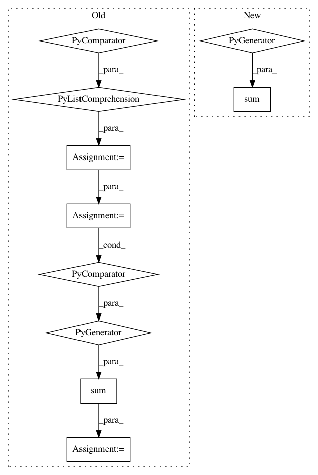

fd3a6fbaa2ca0b7b1fb70071fec33d7a4cebd14d,gpytorch/lazy/sum_lazy_tensor.py,SumLazyTensor,diag,#SumLazyTensor#,79
Before Change
raise AttributeError("other must be a LazyTensor")
def diag(self):
diags = [lazy_tensor.diag().contiguous() for lazy_tensor in self.lazy_tensors]
size = diags[0].size()
res = sum(diag.view(-1) for diag in diags)
res = res.view(size)
return res
After Change
raise AttributeError("other must be a LazyTensor")
def diag(self):
return sum(lazy_tensor.diag().contiguous() for lazy_tensor in self.lazy_tensors)
In pattern: SUPERPATTERN
Frequency: 3
Non-data size: 10
Instances
Project Name: cornellius-gp/gpytorch
Commit Name: fd3a6fbaa2ca0b7b1fb70071fec33d7a4cebd14d
Time: 2019-07-08
Author: balandat@fb.com
File Name: gpytorch/lazy/sum_lazy_tensor.py
Class Name: SumLazyTensor
Method Name: diag
Project Name: mariogeiger/se3cnn
Commit Name: 06777db554db441e1ec2aa2fb8c5d40565a1ba0f
Time: 2019-07-07
Author: geiger.mario@gmail.com
File Name: se3cnn/point_kernel.py
Class Name: SE3PointKernel
Method Name: __init__
Project Name: stanford-mast/nn_dataflow
Commit Name: 0b1a4bad47dfb6ad92ca162cc8e95ba17b342421
Time: 2018-07-26
Author: mgao12@stanford.edu
File Name: nn_dataflow/core/pipeline_segment_timing.py
Class Name: PipelineSegmentTiming
Method Name: time_overhead